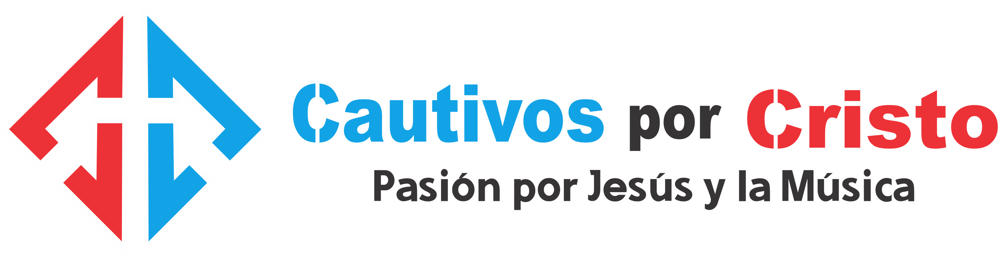

Propósito
Cautivos por Cristo es una agrupación musical cristiana, que su nombre está fundamentado en la cita bíblica que dice:Derribando argumentos y toda altivez que se levanta contra el conocimiento de Dios, y llevando cautivo todo pensamiento a la obediencia a Cristo.2 Corintios 10:5
Es fundada por el licenciado Emmanuel Polanco Feliz, quien es de profesión, periodista, ejerce la labor de docente del Sistema educativo dominicano, es músico, compositor, y maestro del área de Educación Artística.
Es un ministerio evangelístico musical dedicado al canto y la predicación del evangelio del Señor Jesucristo a todo público.
Su orientación musical es variada y diversa. Adopta varios géneros musicales tales como: Rock, pop, Rock-pop, Bolero, Merengue, balada, son, jazz, blues, fusiones, entre otros géneros musicales.
También como estilo interpretativo dentro de sus presentaciones ocupa un espacio no menos importante para la difusión de la doctrina cristiana y la propagación del cristianismo, a través de la predicación del evangelio, el cual es su enfoque principal.
Es una organización itinerante, no enfocada propiamente al lucro; sino a su misión principal de llevar el mensaje del arrepentimiento a quienes no conocen acerca de Jesús.